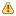

Powered By
このプラグインは、独立行政法人産業技術総合研究所と共同研究した成果を活用しています。
Table Of Contents
Previous topic
Welcome to SysML-RTM’s documentation

このプラグインは、独立行政法人産業技術総合研究所と共同研究した成果を活用しています。
Welcome to SysML-RTM’s documentation
編集中の設計モデル中の不整合を一覧表示、操作するビューを提供します。
[更新]ボタンをクリックして、モデル検証の再実行を行います。
Hint
モデル検証は、メニュー ツール ‣ モデル検証 ‣ モデル検証 からも実行できます。 メニューから実行した場合には、モデルに不整合があることを通知する警告ダイアログ、または、モデルの整合性が保たれていることを通知するダイアログが表示されます。
不整合一覧では、モデルの不整合を表形式で表示します。 一覧には以下の項目を表示します。
Hint
モデル検証ビューのヘッダ(エラーレベル列)にマウスカーソルを合わせると、 エラーレベルの凡例 がツールチップで表示されます。
モデル検証ビューでは以下のエラーレベルを設定しています。
| エラーレベル | 説明 |
|---|---|
| 致命的なエラー | 設計されたモデルから成果物を生成できないため、問題の修正が必要です。 |
| エラー | 生成された成果物が正しく機能しない可能性があるため、問題の修正が必要です。 |
|  警告 | 成果物の設計に潜在的な問題が存在する可能性があるため、問題の調査が必要です。 |
| 通知 | 注意を喚起したい情報を表示します。 |
プロパティビューに選択した行の要素のプロパティを表示します。
選択した行の要素の図要素があれば、図を表示します。
Note
QuickFixにより不整合を解決した場合、モデル検証が自動で再実行されます。 [モデル更新時に、自動的にモデルを検証]ボタンをOFFにしている場合でも、再実行を行います。
エラー行を解決するために参考になるマニュアルの該当箇所を表示する機能です。
Hint
モデル検証ビューの表示/非表示は、メニュー 表示 ‣ モデル検証ビューの表示/非表示 からも実行できます。